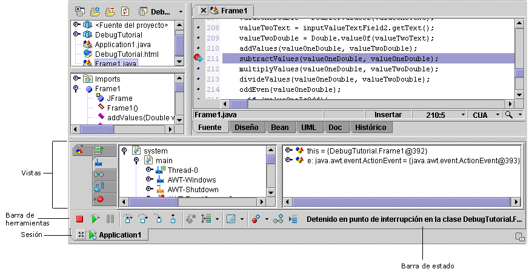

Las funciones de depuración varían según la versión de JBuilder
Se pueden depurar tanto aplicaciones locales como aplicaciones distribuidas, lo que incluye servlets, páginas JSP, applets, beans EJB y tests de unidades. Para depurar los archivos del proyecto, seleccione Ejecutar|Depurar proyecto. El programa puede estar compilado. Durante la depuración, puede ver los hilos y los valores de datos y controlar la ejecución del programa. La interfaz de usuario del depurador, compuesta por las vistas del depurador, la barra de herramientas, la pestaña de sesión y la barra de estado, se muestran en el panel de mensajes.

Si desea más información, consulte:
Generación de aplicaciones con JBuilder Depuración de programas en Java
Creación de aplicaciones con JBuilder: Depuración remota